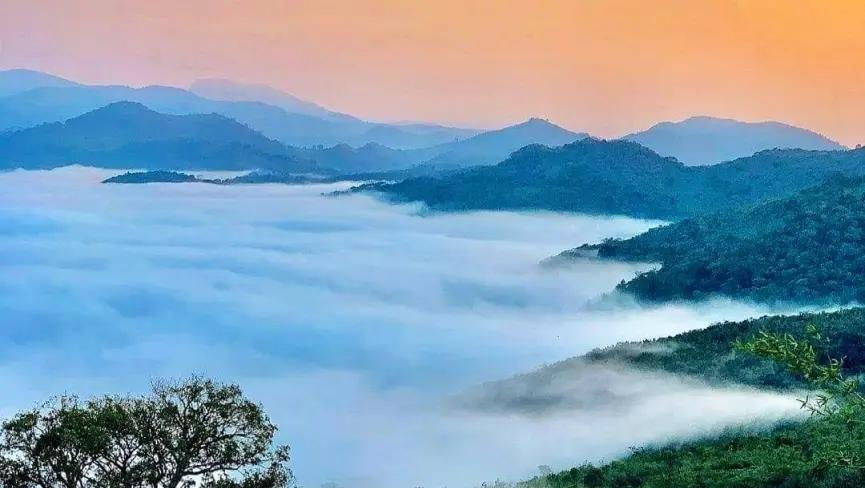

Lambasingi
Experience the peaceful charm of Lambasingi, a quiet hill village often referred to as the “Kashmir of Andhra Pradesh” because of its unusually cool climate and mist-covered landscapes. Surrounded by dense forests, rolling hills, and coffee plantations, Lambasingi offers a refreshing escape into nature’s calmness. Early mornings in the village are often wrapped in thick fog, creating breathtaking views that feel serene and magical. The untouched beauty and silence of the region make it an ideal destination for relaxation and photography. Unlike crowded tourist destinations, Lambasingi retains a simple and natural atmosphere that allows visitors to fully connect with the surrounding environment. Its cool weather, scenic beauty, and peaceful setting make Lambasingi one of Andhra Pradesh’s hidden gems.